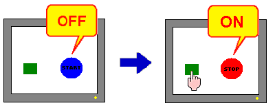
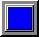

|
|
|
|
|
|
|
|
The following example shows you how to create a basic 2-state lamp that changes its color according to the ON or OFF state of a bit.

In the Graphical Objects toolbar, click the lamp icon and select Lamp from the list.
Click and draw the area on the panel where you want to place the lamp.
The Lamp Settings dialog box opens.
In the General tab, select a variable.
Select a style for the On and Off lamp states. You can view how the lamp changes between the ON and OFF lamp states in the Color tab.
|
Icon |
Lamp Variable |
Lamp Colors (Example: Red when ON, blue when OFF) |
|
|
ON |
|
|
|
OFF |
 (blue) |
In the Color tab, either:
Select a color resource from the Color Resource Library, or
Select Use Local Settings and then set up the ON/OFF Color for each state.
In the Label tab, set the Label Type to either Static or On/Off. When you want the same label no matter what the state, select Static. When you want different labels for the ON and OFF states, select On/Off. Define the font settings, and then type the text to be displayed on the lamp.
Click OK to insert the completed lamp on the panel.

You can use the Lamp Settings dialog box to create various types of lamps.